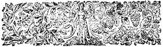

For a richly satisfying, cash money project to finance that homestead, it looks like growing herbs-with net profits as high as $5,000-$10,000 an acre-just about beats all. The folks at Nichols Garden Nursery, out in Albany, Oregon; would like to see others share this bounty and N.P. Nichols has written a little manual packed full of solid ideas for setting up and operating a thriving herb business. Proof that the Nichols' ideas work can be found in the article following this one.
If you want the whole story, send $1.00 to Nichols Garden Nursery, 1190 N. Pacific Highway, Albany, Oregon 97321. By return mail you'll receive 250 mixed herb seeds, a catalog and the complete 10,000 word manual, PROFITABLE HERB GROWING. Until your copy arrives, here's the excerpts from...
The growing and processing of herbs for a living offers greater opportunities today than ever before. There has been a wide resurgence of interest both in culinary and medicinal herbs which has opened new markets that are waiting to be served by small growers like yourself. Hardly a month passes by that some large national magazine does not carry an article or feature on herbs. Even LIFE Magazine not long ago, devoted a lengthy, well-illustrated feature to the subject. The demand for herb plants and seeds is growing rapidly, and most nurseries dealing in them report that the demand is still ahead of the supply.
Forty years ago, when he was a schoolboy, Roy E. Anderson was given a dozen chive plants by his mother. He now grows and markets 35 acres of this herb and is the largest grower of chives in the country.
Sheldon and Hariette Widmer, when they retired to a small farm in Indiana, decided it would be fun to raise herbs. The hobby grew into a successful business, and today their Cherry Hill Herbs are nationally famous.
Miss Arnold, in 1939, bought a single horehound plant at the Providence, Rhode Island spring flower show. She now produces and markets 3000 pounds of this dried herb material alone, plus scores of other varieties.
Patricia Winters, whose start was as humble as Miss Arnold's, now grows 15 acres of herbs and employs 12 people at the height of the season.
There are hundreds of people across the country on one-half, one, and two acre tracts who have achieved security making their living growing herbs.
A few years ago the gift shops of our area broke out with a rash of lavender sachets. Each had an artistic mailer tag attached to it which made them popular with the tourists who bought them for souvenirs to mail back to their friends. The gift shops were enthusiastic with the sales and many thousands of these lavender sachets were sold that summer. We were fortunate to later meet this man on one of his selling trips through this locality. His story is remarkable and we will tell it in his own words.
"Five years ago, my wife and I moved from Michigan to California because my health had broken down. All my life I had been a factory worker, never able to save very much. When we arrived in California, all I had was the old car that brought us out and less than one hundred dollars."
He paused for a moment, and then continued, "I was then forty-six years old and the prospects for the future were not too bright. A few days after we got here I was lucky enough to get a job in a fruit packing house. The pay was small, but I was glad to be working. I worked the night shift, and it was on a warm June evening that I decided to walk home along a different road. As walked along I came by a lavender hedge that was in bloom. I casually pulled a few flower heads, rubbed them in my hands, and inhaled their fragrance. Never had I smelled anything so wonderful. For several days afterwards I kept wondering how many people had actually smelled real lavender blossoms. I thought that there must be thousands who would like to have some. From a start of a few plants in my backyard, a year later I was in the business with a full acre of lavender."
Trying to hide my curiosity, I asked him if an acre could make a person a living. "Oh yes", he replied. "You see we get about ten thousand lavender plants to the acre, and the average plant will produce enough blooms to fill twelve sachets." Based on the $1.80 a dozen he got for his lavender sachets from the gift stores, the gross return from his acre of lavender was approximately $18,000. Out of this must come the cost of raising the lavender, the sachet material and manufacturing costs, and finally the expense of selling the lavender sachets. The probable net profit must have been about $9,000. This of course is an exceptional case, and this high return per acre would be hard to duplicate. But it does indicate what can be done with a person who uses his imagination.
Before a ten cent package of herb seeds is bought, write down all the information available about your farm, location, possible markets, and most important, make out an honest evaluation of yourself. Only when you have assembled all of these facts can you formulate a sound program for success. For example, if your land is less than a quarter of an acre, choose a herb project does not require much space. Among the best projects for grower with limited space are catnip mice, lavender sticks, of the culinary herb products like jellies, herb cookies, herb breads, herb vinegars, herb candies, and potted herbs. A herb plant nursery should have at least one or more acres of land available. About the same amount of area will be needed to pi .duce dried herb material and seeds in enough quantities to make it pay.
If you are located at the edge of a fairly large town, or on a well-travelled road, an attractively built roadside stand featuring a variety of herb products could do a considerable amount of business. If your place is on a road without much traffic going by, then all of your efforts can be devoted to the production end.
Have stores do the selling for you, or you can sell mailorder. First have all of the facts, then start moving towards a definite goal.
In growing herbs we must place them first under two broad classifications: (1) Annual herbs which are started from seed sown in the spring and (2) Perennials that are grown both from seed and rooted plants, and which will grow from one year to the next without further replanting.
Annual herbs include anise, calendula, the basils, caraway, dill, summer savory, nasturtiums, borage, chervil, bene sesame, cumin, fennel, sweet marjoram, parsley and angelica.
Perennial herbs include boneset, calemint, catnip, chamomile, chives, comfrey, costmary, germander, horehound, hyssop, lavenders, lemon balm, lovage, the mints, pennryroyal, rosemary, rue, garden sage, salad burnet, santolina, French sorrel, garden sorrel, thymes, tarragon and wormwood.
Annual herbs are all grown from seeds sown in the spring. In growing herbs from seed it should be remembered that most herbs are native to the Mediterranean area where the climate is dry, sunny and soils are on the light side. For best success you should duplicate these conditions as closely as possible. Many varieties of herbs have seeds that take much longer to germinate than vegetable seeds. Because of their hard coat, some will take as long as 3 to 4 weeks to germinate.
Although many gardeners start their perennial herb plants from seed, if rooted plants are available we recommend getting your start this way. Seeds of perennial herbs are usually harder to start than the annual varieties because they are much smaller and more difficult to germinate. Small rooted herb plants when they arrive from the nursery should be immediately planted out in a specially prepared bed with plenty of peat moss and sand worked into it. Protect the small plants from the hot sun until they become established.
Herbs with very small seeds, and particularly the perennial varieties, do best started indoors in flats and later transplanted to the garden. For this we recommend the sphagnum moss method of plant propagation. Annual herbs are usually started from seed sown in the open ground after all danger of frost has passed. Follow the usual cultural practices you would use growing vegetables.
In choosing a location in which to plant herbs, pick an area that has full sun exposure where the plants will produce more essential oils and flavor. It is the essential oils which produce the flavors and fragrances. Over-watering and excessive use of fertilizer will cause herbs to produce lush, fast growing foliage that has a low oil content.
Herbs that are harvested for drying should be cut at the first sign of flower buds forming on the plant. At that stage of growth, their leaves are at their peak of aromatic oils and flavor. When plants are ready to harvest do it on a clear, early morning as soon as the dew has dried. Herbs cut in late afternoon and allowed to dry in the excessive heat of the full sun not only lose much of their potency, but the foliage becomes faded and unattractive.
Cut the plants with a sufficiently long stem so that the herbs can be tied in bunches and hung to dry. If you prefer to dry them on canvas sheets or screens, be sure to stir the material frequently in order to prevent it from molding.
Drying herbs should be exposed to a good circulation of air and protected from the direct rays of the sun. A drying temperature of around 70 degrees seems to give the best results. With good air circulation and dry weather where the humidity is low, most herbs will be sufficiently dry for processing in 7 or 8 days. Avoid drying herbs in a place of excessive heat; when the temperature rises above 100 degrees the herbs will begin to lose some of their essential oils.
After the leaves have thoroughly dried, they are easily stripped from the stems. To remove broken stems and other foreign material, sift the mixture through a coarse screen. If not thoroughly cleaned by the first screening, give the plants a second screening. This should leave nothing but the herb leaves which should be placed in tightly sealed glass jars and stored in a dark place away from the direct rays of the sun.
The most popular herbs grown for their seeds are dill, anise, caraway, cumin, sesame, and sometimes mustard. Unlike herb plants grown for foliage, these herbs must thoroughly ripen. Test the plants by gently tapping them. If the seeds start to fall they are ready to harvest.
To prevent too great a loss of seeds through shattering, cut the flower heads gently and carefully tip them into a bucket. The entire harvest should be placed on tight cloths, spread out on an even grass surface. Over the cloth holding the flower heads, spread another cloth of equal size. Now take a flail and gently beat the herb flower heads so that they release the seeds without injuring them. Light flat sticks can be used as flails. After the seeds have been threshed from the plant material, they are sifted through a fine screen. The small chaff that will go through the screen with the seeds can be winnowed out by pouring the seeds from one container to another on a breezy day. Seeds should not be stored until thoroughly dried because the slightest moisture present will cause them to mold. Store in tightly sealed containers in a dark place, away from sunlight.
This is one of the most important phases of the herb business and offers good opportunities for the beginner. The herbs that are dried and packaged are numerous, but for the beginner we recommend starting with the most popular varieties. They are summer savory, rosemary, sage, French thyme and, to a lesser extent, the mints and French tarragon.
Under this heading will come both the dried seeds and foliage. This field is immense and wide open for the enterprising small acreage owner. The business is so profitable that many of the large food wholesale concerns have gone into it on a large scale. Through powerful, well-financed national advertising, these large distributing companies have created considerable interest in herbs and have increased their consumption many times. This of course gives the small grower a free ride with his product. He does not have to embark on the expensive business of educating the public. The big outfits have done it for him, and all he has to do now is to get in there and produce for a waiting market As an example of the profits that exist in this business, we recently found that a 25 cents package of sweet basil, selling in supermarkets contained approximately 1/4 ounce of this herb. One single basil plant will produce four times this amount of dried leaf material and 15,000 plants can be grown on an acre.
The small grower can use several methods of packaging his herbs, depending on the type of market he is aiming for. In the high priced specialty food stores catering to an elite trade, you will have to use distinctively shaped jars with artistically designed labels. This is a difficult market to get into because the bigger companies have pretty well covered these stores. Another reason that a beginner should not go after the fancy high priced stores is that you will have an enormous initial investment tied up in jars and specially printed labels.
For the beginner we recommend putting herbs into small pliofilm or cellophane bags that can be heat-sealed and stapled to heavy cardboard display cards. This inexpensive packaging, if neatly assembled, is effective and gives the smaller stores an opportunity to offer whole leaf herbs of a fancy grade. Usually five different herb varieties are stapled in rows of ten on a 12" by 18" display card. Each small bag of herbs should contain approximately 1/4 ounce of herb material.
The display card should have a bold heading, attractively printed, stating something like "FRESH CULINARY HERBS". A good heading we saw recently said, "OREGON GROWN HERBS MAKE FOOD TASTE BETTER". With a little thought you may come up with a small printed sheet of recipe suggestions for that specific plant.
A display card carrying 50 bags of herbs will sell well to the consumer at 25 cents a package. The merchant will expect a one-third mark-up on such a display. On this specialized item you might have to give some of the bigger stores a forty percent mark-up. For instance, a card holding fifty packets of herbs will retail out to a total of $12.50. If a merchant makes 40% on such a card, it should be sold to him for $7.50.
On an acre of land you should be able to produce enough herbs to fill at least one thousand display cards. This means a gross return of $7500 an acre when the herbs are dried and so merchandised. This figure is arrived at by estimating that an acre will produce 1000 pounds of dried herb material. Since each display card of fifty quarter-ounce packets takes less than one pound of herbs, the acre will produce more than one thousand cards. From the $7500 there must be deducted expenses of about 35% of the gross return. That will leave a net profit of $5000 an acre. Remember that this can be considered only as an estimated profit. There are several factors that could make it go up or down. Keep yourself flexible and do the things necessary to fit in with your local conditions. If a display card with 50 packets of herbs is too big for some of the stores you call on, then reduce it to twenty-five packets of dried herbs. Of course, when display cards are reduced in size you should not give the merchant more than a thirty-three percent mark-up.
Your best prospects for selling display cards of herbs will be found among supermarkets, grocery stores, health food store. and specialty shops. Any store that sells food is a prospect for a dried herb display card. A good time to see a store manager is in the morning when he is least apt to be rushed.
In selling your herb display cards, bring these important points to the attention of the buyer: (1) Your herbs are locally grown which means they are fresh and full of flavor. (2) The housewife who tries a package will find them economical to use because they go further due to their stronger flavor. This, of course, as suits in repeat business. (3) Mention that the transparent packets attract the attention of the housewife and induce her to buy. Being stapled to a display card they are easily detached which makes them a self-service item. (4) Emphasize that you will give regular service to insure that there will always be a well-filled display card in the store. In most instances it will pay you to pick up a card that has been sold down to the point that it looks ragged. Credit the merchant with the unsold portion that remains and replace it with a fresh display card. When you go home you can remove the packages on cards you picked up and restaple them to fresh cards. There is no loss to you except for a new display cart .
In some instances where the buyer is hard to convince, you might have to sell your cards on a guaranteed basis. This means that at the end of a certain period the merchant has the privilege of returning the unsold portion of the card for a cash refund if he decides the herbs do not sell well enough for him to stock.
There is much that the herb grower can do to help the sale of his products even after they are placed in the supermarket. Just to have the herb merchandise sit on the shelf is not enough. It must be promoted and brought to the attention of the public. This is a job that you must do, because the store owner rarely has the time to do it.
For instance, if you are specializing in herb teas a good idea would be to have the store owner cooperate by giving you a small space some Saturday, afternoon where you could give away free herb tea samples to the customers. You can use small disposable paper cups in which to pour the tea for the people. Have on display at the stand, packages of the different herb teas you produce. Be sure you can answer questions intelligently and give a convincing sales talk. As an added inducement for people to buy on the day when you are putting on the promotion, you might give away free a generous sample package of tea with each regular purchase of herb tea. The free sample would be a different variety than what they purchase. This type of promotion can be done for any kind of herb product that a store might be featuring.
A good promoter will endeavor to be in a different store at least twice a month on a Saturday afternoon in order to reach a maximum mum number of people. Choose only the large stores for these special displays. Most big supermarkets will welcome the opportunity of playing host to a promotion that is unusual and offers free samples and merchandise inducements to gain sales. All profits from the sale of herb items, whether they are made your display stand or from the regular display shelves of the store, belong to the store. All you should expect is the whole sale price of the herbs you are selling.
Along with store demonstrations, take advantage of every opportunity to speak at garden clubs, womens' organizations, church groups, or civic gatherings. Whenever you appear at these functions, take along plenty of samples to pass out. Regardless of how good your business becomes, continue promoting and advertising. Coca Cola sells hundreds of millions of bottles a day, but the more it is sold, the more it is advertised. Eventually you should have designed a distinctive emblem that you use on your letterheads, truck, packages and even on the sign of your herb farm. It will pay you to have an experienced industrial artist to do this work for you.
This phase of the herb business is the nursery end and will require at least an acre area to be profitable. It holds unlimited opportunities because you can retail right off your own place, wholesale your products through stores or use mailorder selling.
Gardening is America's number one hobby and that is why selling to gardeners is such a paying field.
Here at our nursery where we keep a few colonies of bees for plant pollination we are always able to sell honey at a fancy price. The same customers come back every year to buy all of our surplus because our honey has a unique flavor that comes from the herb plants in our fields. Many bee-keepers throughout the country are becoming aware of this fact and are planting some herbs in their bee pastures. Bee-keepers can be enormous markets for herb plants and seeds. These people will buy plants by the thousands and seeds by the pounds.
Bees will avidly forage the nectar from practically all herb plants, but the best ones to sell bee-keepers are hyssop, rosemary, sage, thymes, and lemon balm. Borage seed is in very great demand. We once got an order for 200 pounds of this seed from a large beekeeper in Nevada but, unfortunately, we could not supply it.
Both annual and perennial herbs can be sold locally. Among the most popular are angelica, lemon balm, the basils, salad burnet, catnip, chamomile, chives, costmary, fennel, germander, horehound, hyssop, lavender, lovage, sweet marjoram, sorrel, French tarragon (the biggest seller of all herbs), the thymes, sweet woodruff, wormwood, yarrow and oregano.
For beginners we recommend gathering seed of the annual variety of herbs, and only a few of the perennial varieties. This business of raising seeds for gardeners is very specialized, requires considerable skill and some equipment. Here you must gather your seeds so that they have a high germination percentage. Seeds grown for culinary use are not so exacting in their requirements, because germination is of little or no importance. But for those who would like to try their hand at this phase of the herb business, the recommended variety of seeds to grow are: angelica, anise, the basils, borage, salad burnet, caraway, catnip, chervil, chives, coriander, dill, fennel, horehound, hyssop, lavender, lovage, sweet marjoram, rosemary, rue, summer savory, the sorrels, the thymes and yarrow. Use the same procedure for gathering these seeds as you would for those gathered for culinary purposes. Since space does not permit us to give complete instructions on seed production, we recommend your public library as a source of books that deal with the subject in greater detail.
If you have a good location that is accessible and lends itself to retail sales, then you can sell herb plants and seeds direct to the customer. To derive the maximum profits that a herb business can give, you should plan to sell both retail and wholesale. Along with your sales yard line up stores that handle bedding plants in the spring of the year to also take on your herb plants. One good supermarket can sell scores of herb plants on a busy weekend. Three or four good stores can almost provide you with an income during the planting season. Wholesale accounts will expect to buy plants so that they can make a 40% markup. For instance if the herb plants retail for $1 each, the store will expect to buy them for 60 cents, so that they have 40 cents a plant to work with. With the annual herb plants which will sell for considerably less, some stores might be content to work on a 33 and 1/3 percent margin. Much of this pricing will be determined by local conditions and the prevailing prices of your area. Don't forget-costs are going up.
Herb seeds are packed in small cellophane envelopes; 1/4 teaspoonful for the very small seeded varieties and 1/2 teaspoonful for the larger seeded varieties. The cellophane envelope is then placed in a manilla envelope that is slightly larger. On the outer manilla envelope, type or have printed the name of the herb. All seed orders should include cultural instructions. The seeds can be sold through garden and seed stores, and occasionally some florist shops will handle them. Sale of herb seeds locally will always be limited, and the best chance of making a profit in this phase of the business is in mailorder distribution. Instead of being able to reach the few thousand customers located in your area, through mailorder you can reach hundreds of thousands scattered across the United States. Further in this course we will deal more fully with the mailorder business as it applies to the herb grower.
It is estimated that the French use twenty-five times more herbs in their cooking than the Americans. The Italians, Greeks, and Spanish use twenty times more. The herb market in this country has been a sleeping giant that is just beginning to awaken. If people in the United States just used a minimum of herb seasoning, the market would increase tenfold. Not only is there room for more herb growers, but they are badly needed to supply the increase in business that lies ahead. Besides the market for culinary herbs, there is a growing demand for the aromatic herb novelties.
We hope that in spite of this booklet's shortcomings, we have been able to give the reader information, guidance, and encouragement to go into a business that has great possibilities. Many people have started their own profitable herb business using these plans. You, also, can do the same. The hardest part of any business is in starting. The Chinese in their infinite wisdom have a saying, "To walk a mile, you must take the first step". We might borrow that thought and say, "To raise an acre of herbs, a single seed must first be planted". Good luck to you.
Remember now, gang: For the complete story on setting up a homestead herb business, 250 starter seeds and a big catalog of herb supplies, hustle $1.00 on in to:
NICHOLS GARDEN NURSERY
1190 N. Pacific Highway
Albany, Oregon 97321
|
 DETAIL: HANDBOOK OF PLANT AND FLORAL ORNAMENT FROM EARLY HERBALS/DOVER, 180 Varick St., N.Y., N.Y. 10014/$4.00. |
|
|